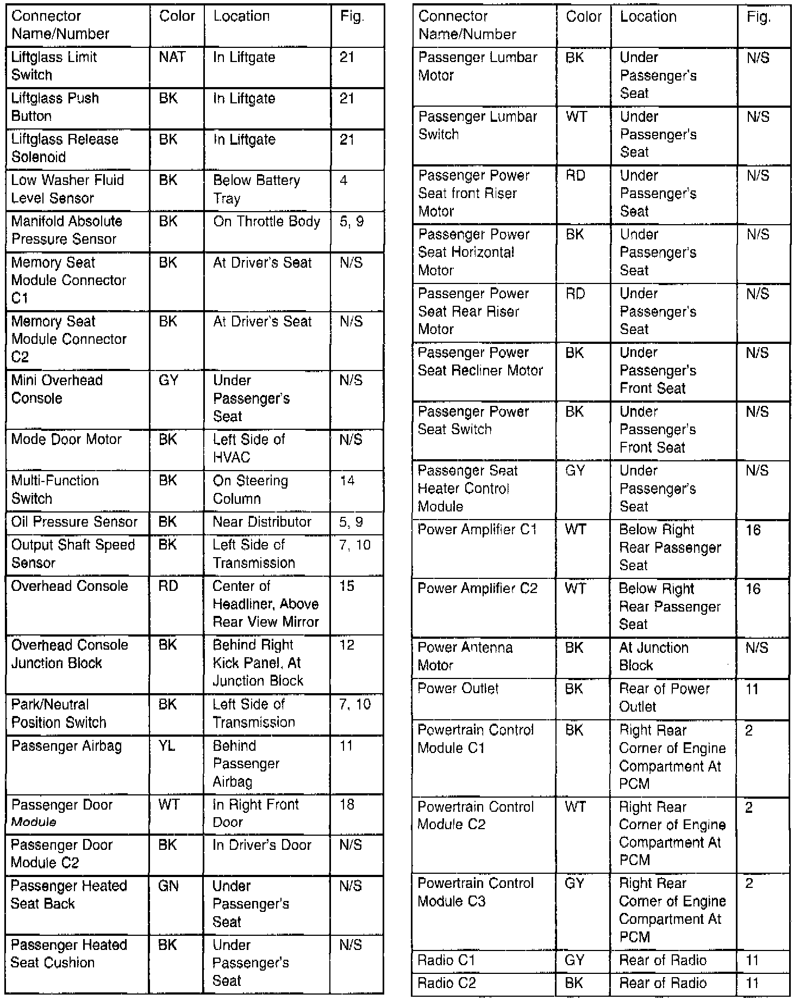

Operation CHARM
: Car repair manuals for everyone.
Русский
Home
>>
Jeep
>>
1997
>>
Grand Cherokee 4WD L6-4.0L VIN S
>>
Repair and Diagnosis
>>
Diagrams
>>
Electrical Diagrams
>>
Diagrams By Group Number
>>
Group 8W-90 Connector and Ground Locations
>>
Connector & Ground Locations Index
>>
Part 6 of 8
Part 6 of 8
Connector Locations Index (Part 6 Of 8):
